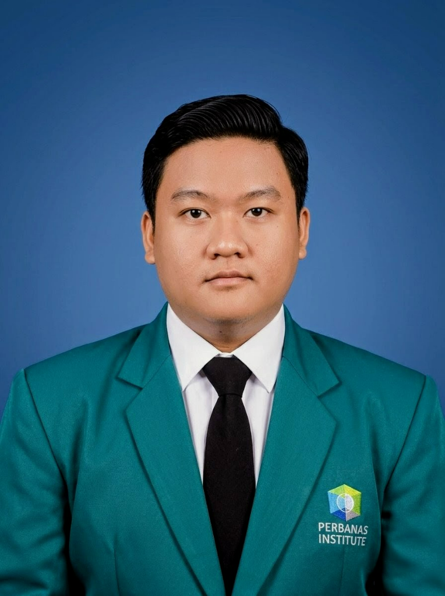

Hallo! Saya Raka Fahlevi
Creative & Data Enthusiast
Mahasiswa Tahun Terakhir Sistem Informasi di Perbanas Institute yang memiliki ketertarikan pada pengembangan teknologi, analisis data, dan Keamanan Informasi. Terbiasa bekerja dalam tim, berpikir kritis, serta memiliki kemampuan komunikasi dan manajemen waktu yang baik.
Tentang Saya

Profil Singkat
Saya merupakan mahasiswa Tahun Terakhir Sistem Informasi di Perbanas Institute yang memiliki ketertarikan pada pengembangan teknologi, analisis data, dan Keamanan Informasi. Terbiasa bekerja dalam tim, berpikir kritis, serta memiliki kemampuan komunikasi dan manajemen waktu yang baik dengan semangat untuk terus belajar dan beradaptasi terhadap perkembangan teknologi.
Kemampuan & Keahlian
Hardskill
- Data Analytics 90%
- Web Development 85%
- UI/UX Design 80%
- Graphic Design 85%
Softskill
- Teamwork & Collaboration 95%
- Problem Solving 90%
- Creative Thinking 90%
- Adaptability 95%
Informasi Tambahan
Sertifikasi
- Business Intelligent Analyst (BNSP)
- TOEFL (CLIent)
- Google IT Support (Google Digital Garage X KOMINFO)
Kemampuan Bahasa
- Bahasa Indonesia - Native (Bahasa Asli)
- English - Intermediate (Menengah)
Tools I Use
Riwayat Pendidikan
S1 Sistem Informasi
Peminatan Data Analytics
Perbanas Institute (IPK 3.73/4.00) Cum Laude
Organisasi Kemahasiswaan:
- Himpunan Mahasiswa Sistem Informasi (HIMSI)
- Radio IPFM Perbanas
Teknik Komputer dan Jaringan
Sekolah Menengah Kejuruan
SMK Mekanik Cibinong (Nilai: 82.40)
Organisasi Kesiswaan:
- Pasukan Pengibar Bendera (PASKIBRA) Tingkat Sekolah
Pengalaman Kerja
FTI Computer Lab Assistant
Perbanas Institute
- Membantu pelaksanaan manajemen dan operasional laboratorium komputer.
- Menyediakan dukungan teknis sesi praktikum dan kegiatan terkait.
- Mengelola dan memelihara website resmi laboratorium.
- Mengelola akun media sosial laboratorium dan mempublikasikan konten yang relevan.
VAPT Technical Writer
Freelance Project
- Menyusun Laporan VAPT secara detail dan akurat.
- Mendokumentasikan hasil temuan security assessment (seperti celah keamanan dan kerentanan sistem).
- Menulis Dokumentasi Eksekutif untuk meringkas laporan teknis menjadi dokumen risiko bisnis yang mudah dipahami oleh manajemen atau klien non-teknis.
Creative Unit Internship
FTI Perbanas Institute
- Mengelola platform media sosial FTI, termasuk Instagram dan Facebook.
- Membuat konten tertulis mengenai aktivitas dan kegiatan fakultas.
- Mendesain materi visual seperti poster dan aset publikasi web/media sosial.
Marketing Support
Perbanas Institute
- Menjalankan strategi promosi untuk memperkenalkan institusi ke sekolah dan organisasi pendidikan.
- Membuat dokumen video kegiatan dan menerbitkannya di media sosial.
Portofolio Proyek

SI Seleksi Calon Penerima Beasiswa KIP-Kuliah
Perancangan sistem terintegrasi untuk menyaring dan mengelola calon penerima beasiswa KIP-Kuliah di lingkungan Perbanas Institute secara efektif dan transparan.

Perancangan dan Pengembangan Portofolio Website
Pembuatan website portofolio interaktif premium bertema astronomi yang merepresentasikan profil diri, kemampuan teknis, dan seluruh karya ilmiah.

Sistem Informasi Eksekutif (SIE) Berbasis Dashboard
Dashboard monitoring visual interaktif untuk melacak pemesanan layanan secara real-time demi efisiensi keputusan operasional eksekutif.

Perancangan UI/UX Website Laboratorium FTI
Redesain visual antarmuka dan penataan struktur informasi portal web resmi Laboratorium Fakultas Teknologi Informasi Perbanas Institute.

Poster Design — @artwork.design16
Koleksi karya desain poster artistik dengan gaya editorial dan storytelling visual yang kuat. Menggabungkan teknik tipografi ekspresif, tone warna moody, dan komposisi foto yang dramatis untuk mengomunikasikan narasi emosional yang mendalam melalui medium visual.
Publikasi Ilmiah
Policy Recommendations for Enhancing Sustainable Performance in Banking Through Leveraging FinTech (2026)
Google Scholar • Raka Fahlevi, et al.
Partnership Models to Strengthen the Promotion of Sustainable Tourism at Gunung Padang Site, Tourism Destination, West Java, Indonesia (2025)
Google Scholar • Raka Fahlevi, et al.
Model Kemitraan untuk Memperkuat Promosi Pariwisata Berkelanjutan di Destinasi Situs Gunung Padang, Jawa Barat, Indonesia (2025)
Google Scholar • Raka Fahlevi, et al.
Memanfaatkan Handphone Menjadi Cuan: Literasi Digital Bagi Warga Desa Ligarmukti (2025)
Google Scholar • Raka Fahlevi, et al.
Sistem Absensi Pintar Menggunakan YOLO dan CNN untuk Pengenalan Wajah Secara Waktu Nyata (2025)
Google Scholar • Raka Fahlevi, et al.
Continuance Intention pada Aplikasi E-Wallet dengan Menggunakan Extended Expectation Confirmation Model (EECM) (2024)
Google Scholar • Raka Fahlevi, et al.
Penghargaan Akademik
Program Kreativitas Mahasiswa (PKM) 2025
Terpilih dalam Proposal Skema Insentif Kategori Artikel Ilmiah oleh Kementerian Pendidikan, Kebudayaan, Riset, dan Teknologi RI pada ajang PKM 2025.
Presenter Seminar Nasional
Presenter Makalah di Seminar Nasional Perbanas Institute (Kategori Pengabdian Masyarakat & Call For Paper) tahun 2024, 2025, dan 2026.
Presenter Kongres Internasional
Presenter Internasional Makalah Ilmiah di Ankara International Congress on Scientific Research-VIII pada tahun 2023.
Medali Perunggu LKTIN
Pemenang Medali Perunggu di Lomba Karya Tulis Ilmiah Nasional (LKTIN) Universitas Brawijaya 2023.
Hubungi Saya
Informasi Kontak
Terbuka untuk kolaborasi proyek sistem informasi, analisis data, riset ilmiah, atau diskusi Keamanan Informasi.